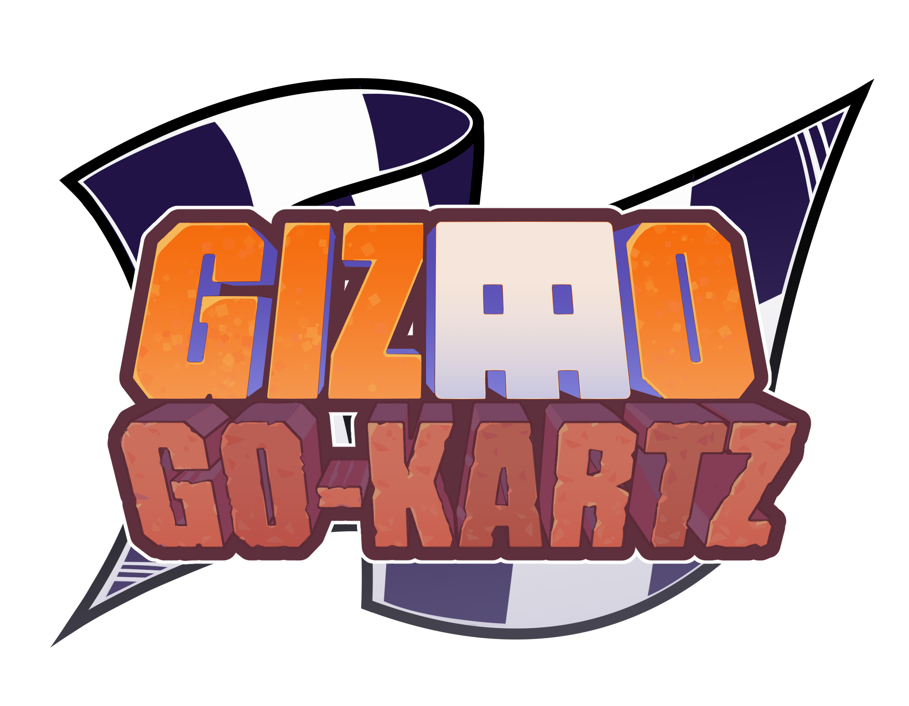
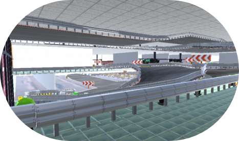
Gizmo Go-Kartz is a kart racing game developed by students at RIT in summer 2025.
Players compete to be the first to finish three laps around a race course while aided by power-ups they collect along the way.
This project was part of an experiment to create student-led projects over one co-op block to satisfy graduation requirements.
The game is loosely based on RIT campus, and features characters inspired by college students and campus mascots.
Students were given the option to work in-person, fully remote, or hybrid.
The game was made in the Unity game engine, programmed in C#, and assets were modeled in Blender.
I worked on level design, primarily on Tech House Turnpike, the third race track in the initial four.
We planned for every group of four tracks to have one easy, intermediate, unique, and difficult track.
Tech House Turnpike is designed to be a unique track with multiple branching pathways and more closed nature.
The track is based on the computer science building at RIT, and is mostly indoors.
I took the track through our entire process pipeline.
I sketched the track on graph paper before making a model in Blender.
Once I finished modeling, I UV unwrapped all of the faces and exported the model to Unity.
I also greyboxed the track in Blender, but added final assets from our content team in Unity.
The track was tested twice a week to find bugs and other things to fix for the track.
Most of my time was spent iterating Tech House Turnpike to make it the best version time would allow.
In addition to working on my own track, I often served as an inter-team ambassador.
When the level design team needed to reach out, I was often the one to send that message.
If another team needed us, I was often the person to answer their message.
I also tended to be the person keeping tabs on our progress for internal testing and presentations.
Level design did not have an official team lead, so I made sure to do my part to keep us on track.
When the content team finished a batch of track assets, I was typically the person who would import them into the
Unity project and convert them into Unity prefabs. I was also the main person converting texture files into Unity materials.
Lastly, I tended to be the person doing the most documentation.
As I worked, I jotted my attempts in my notebook. Once I could confirm my work was sound, I shared it with my time via
our process wiki page.
In the last weeks of the project, one of my team members was unable to contribute to our last pieces of documentation,
but I was able to take on their workload.
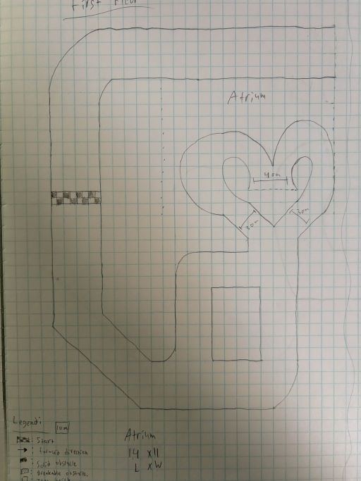
Sketch for V1.2 1st Floor
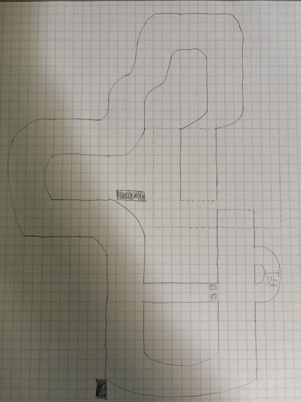
Sketch for V1.2 2nd Floor
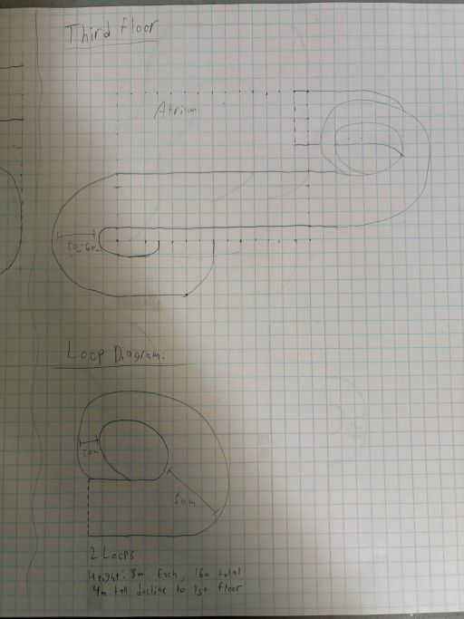
Sketch for V1.2 3rd Floor
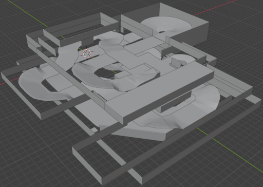
Model for V1.2
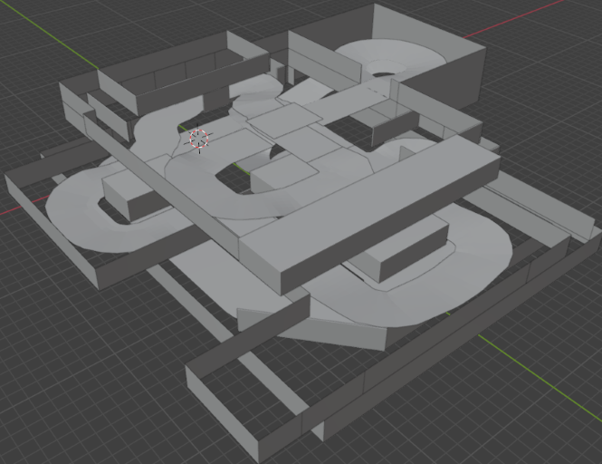
Model for V2.3
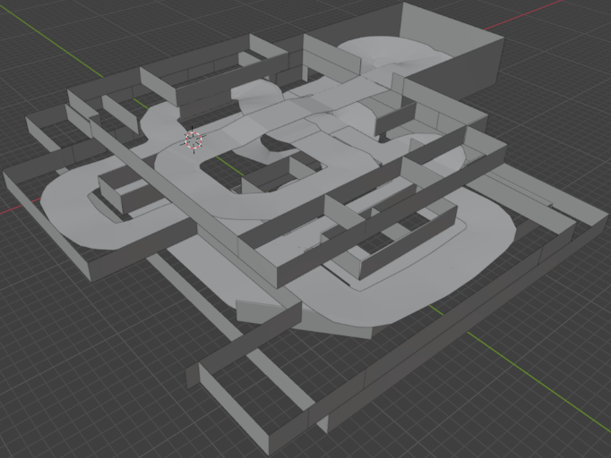
Model for V3.2
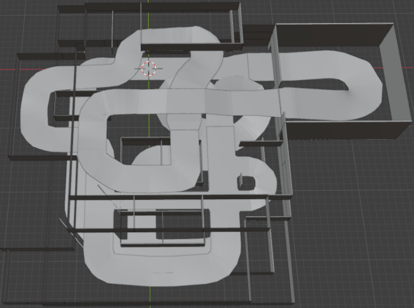
Model for V4.2
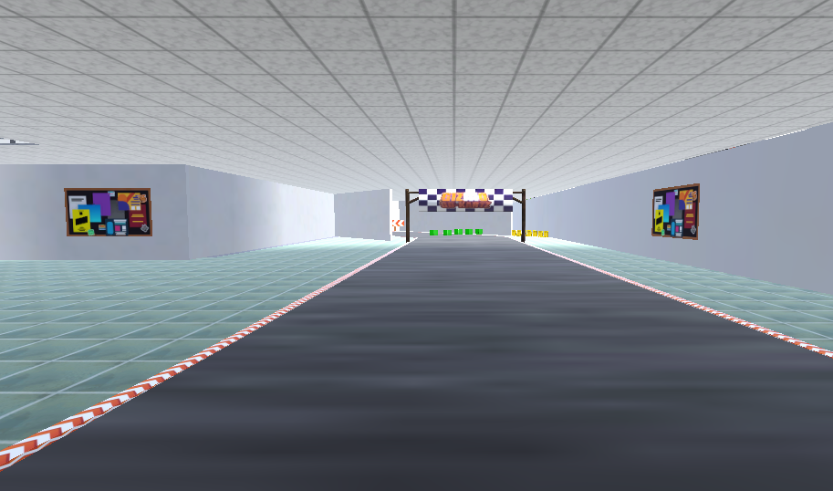
View of the Starting Line
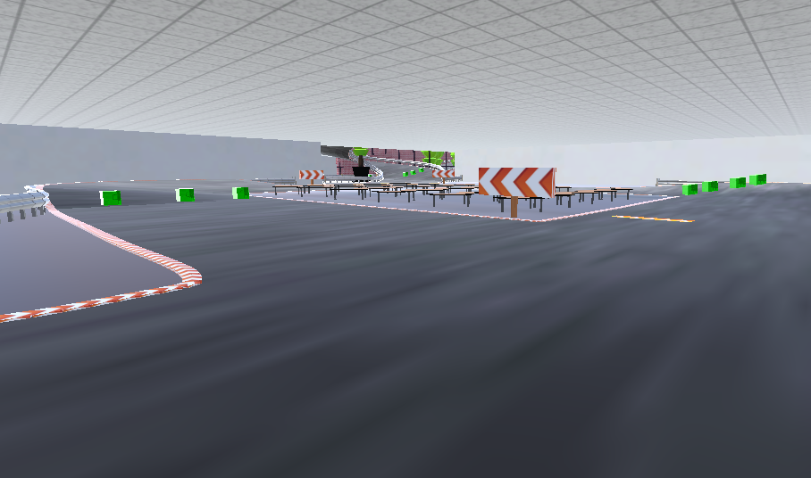
The First Time the Track Branches.
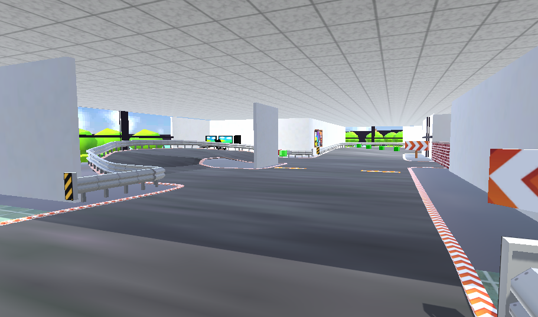
The Start of the Second Floor
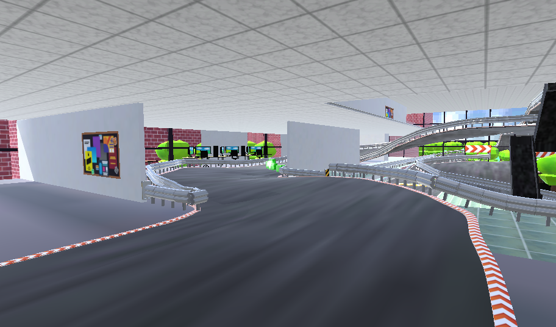
The Computer Lab on the Second Floor.
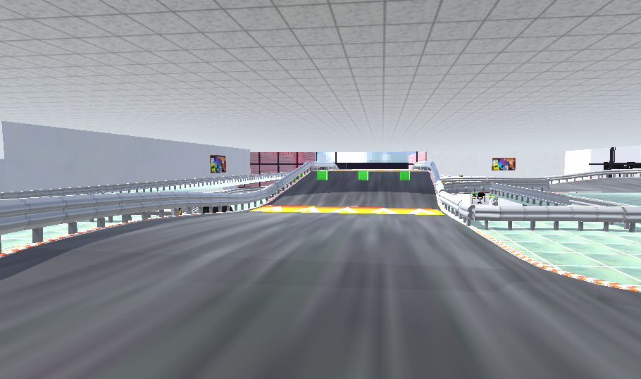
The Jump on the Third Floor.
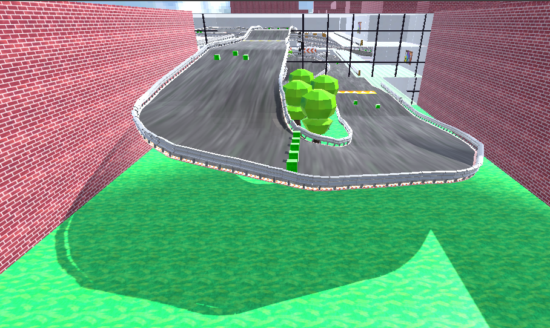
The Outdoor Segment of the Track.